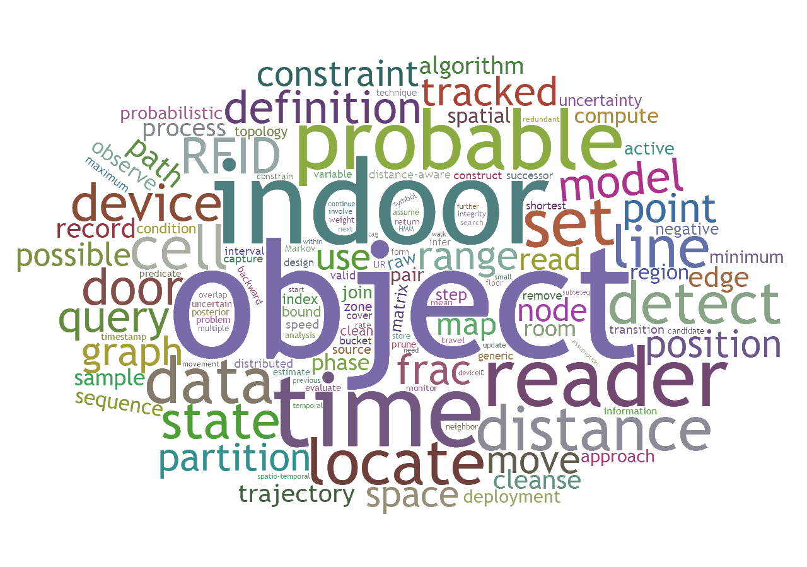

Welcome to Literature Repository for Indoor Data Management

Indoor spaces may accommodate very large populations of moving individuals. In fact, people spend large parts of their lives in indoor spaces such as private homes, office buildings, shopping malls, conference facilities, airports, and subway stations.
Indoor Positioning Systems built by multiple wireless technologies and their produced mobility data have attracted wide attention from various research communities and industries. Anti-terrorist missions, customer engagements, disaster aids, logistics, manufacturing, urban transportation, medical services, and many other businesses can all benefit significantly from making use of indoor-space mobility data.
As increasing number of researches have been conducted on the management of indoor-space mobility data, we build this Literature Repository for the researchers or practitioners who are interested in such topics to explore freely. Wish you a good luck and enjoy it!
Version
Last Modified: Aug 11, 2016.Built by Latex Beamer with the Darmstadt+beaver theme.
The current version of the fulltext pdf is v. 2016-08-11, in total 615 pages, with a size of 35.4MB.
Change Logs:
1. update the section 2.7;
2. update the section 5.1;
3. finish and revise the section 4.1.
4. build the fulltext version.
Contact
We're recently busy adding more contents to enrich this repository, thus you might find a number of typos/errors in the current version of slides. We sincerely thank you for your efforts of reporting problems to us by emails and/or direct messages in any time. Please feel free to contact Huan. Looking forward to hearing from you!Goals
- To give a brief review introduction to indoor data management techniques.
- To review a series of works in this field, including their proposed models, indexes and algorithms.
- To discuss how to bring those advanced theoretical contents into practice.
A Reading List
Contents
1 Outlines
slides: papers: Christian S. Jensen, Hua Lu: The Great Indoors: A Data Management Frontier.
Christian S. Jensen, Hua Lu: The Great Indoors: A Data Management Frontier. - Christian S. Jensen, Hua Lu, Bin Yang: Indoor—A New Data Management Frontier. IEEE Data Eng. Bull. 33(2): 12-17 (2010).
- Hua Lu, Muhammad Aamir Cheema: Indoor Data Management. ICDE 2016: 1414-1417. [download related slides]
2 Indoor Space Models and Applications
2.1 Graph Model Based Indoor Tracking
Base Graph; Deployment Graph; Tracking; Symbolic Model
slides: papers:
- Christian S. Jensen, Hua Lu, Bin Yang: Graph Model Based Indoor Tracking. MDM 2009: 122-131.
2.2 Scalable Continuous Range Monitoring of Moving Objects in Symbolic Indoor Space
Moving Uncertainty; Indexing; Online Range Monitoring; Symbolic Model
slides: papers:
- Bin Yang, Hua Lu, Christian S. Jensen: Scalable Continuous Range Monitoring of Moving Objects in Symbolic Indoor Space. CIKM 2009: 671-680.
2.3 Probabilistic Threshold k Nearest Neighbor Queries over Moving Objects in Symbolic Indoor Space
Moving Uncertainty; Indexing; NN Queries; Symbolic Model
slides: papers:
- Bin Yang, Hua Lu, Christian S. Jensen: Probabilistic Threshold k Nearest Neighbor Queries over Moving Objects in Symbolic Indoor Space. EDBT 2010: 335-346.
2.4 Spatio-temporal Joins on Symbolic Indoor Tracking Data
Moving Uncertainty; Spatio-temporal Join; Pruning; Indexing
slides: papers:
- Hua Lu, Bin Yang, Christian S. Jensen: Spatio-temporal Joins on Symbolic Indoor Tracking Data. ICDE 2011: 816-827.
2.5 A Foundation for Efficient Indoor Distance-aware Query Processing
Indoor Distance; Indexing; Query Processing
slides: papers:
- Hua Lu, Xin Cao, Christian S. Jensen: A Foundation for Efficient Indoor Distance-aware Query Processing. ICDE 2012: 438-449.
2.6 Efficient Distance-aware Query Evaluation on Indoor Moving Objects
Indoor Distance; Indexing; Space Model; Query Processing
slides: papers:
- Xike Xie, Hua Lu, Torben Bach Pedersen: Efficient Distance-aware Query Evaluation on Indoor Moving Objects. ICDE 2013: 434-445.
2.7 Distance-Aware Join for Indoor Moving Objects
Indoor Distance; Join; Query Processing
slides: papers:
- Xike Xie, Hua Lu, Torben Bach Pedersen: Distance-Aware Join for Indoor Moving Objects. IEEE Trans. Knowl. Data Eng. 27(2): 428-442 (2015).
2.8 Extracting Indoor Spatial Objects from CAD Models
Space Models; Indexing
slides: papers:
- Dazhou Xu, Peiquan Jin, Xiaoxiang Zhang, Jiang Du, Lihua Yue: Extracting Indoor Spatial Objects from CAD Models: A Database Approach. DASFAA Workshops 2015: 273-279.
3 Indoor Data Cleansing
3.1 Leveraging Spatio-Temporal Redundancy for RFID Data Cleansing
RFID Cleansing; Bayesian Inference; Sampling
slides: papers:
- Haiquan Chen, Wei-Shinn Ku, Haixun Wang, Min-Te Sun: Leveraging Spatio-Temporal Redundancy for RFID Data Cleansing. SIGMOD 2010: 51-62.
3.2 Spatiotemporal Cleansing for Indoor RFID Tracking Data
RFID Cleansing; Spatio-temporal Properties; Deployment Graph
slides: papers:
- Asif Iqbal Baba, Hua Lu, Xike Xie, Torben Bach Pedersen: Spatiotemporal Cleansing for Indoor RFID Tracking Data. MDM 2013: 187-196.
3.3 Handling False Negatives in Indoor RFID Data
RFID Cleansing; Moving Uncertainty; Deployment Graph
slides: papers:
- Asif Iqbal Baba, Hua Lu, Torben Bach Pedersen, Xike Xie: A Graph Model for False Negative Handling in Indoor RFID Tracking Data. SIGSPATIAL/GIS 2013: 454-457.
- Asif Iqbal Baba, Hua Lu, Torben Bach Pedersen, Xike Xie: Handling False Negatives in Indoor RFID Data. MDM 2014: 117-126.
3.4 Offline Cleaning of RFID Trajectory Data
RFID Cleansing; Moving Uncertainty; Space Model; Indoor Distance
slides: papers:
- Bettina Fazzinga, Sergio Flesca, Filippo Furfaro, Francesco Parisi: Cleaning Trajectory Data of RFID-monitored Objects through Conditioning under Integrity Constraints. EDBT 2014: 379-390.
- Bettina Fazzinga, Sergio Flesca, Filippo Furfaro, Francesco Parisi: Offline Cleaning of RFID Trajectory Data. SSDBM 2014: 5:1-5:12.
3.5 Learning-Based Cleansing for Indoor RFID Data
RFID Cleansing; Learning; Hidden Markov Model; Deployment Graph
slides: papers:
- Asif Iqbal Baba, Manfred Jaeger, Hua Lu, Torben Bach Pedersen, Wei-Shinn Ku, Xike Xie: Learning-Based Cleansing for Indoor RFID Data. SIGMOD 2016: 925-936.
4 Indoor Movement Analysis
4.1 Finding Frequently Visited Indoor POIs Using Symbolic Indoor Tracking Data
Uncertainty; RFID Tracking; Flow Counting; Symbolic Model
slides: papers:
- Hua Lu, Chenjuan Guo, Bin Yang, Christian S. Jensen: Finding Frequently Visited Indoor POIs Using Symbolic Indoor Tracking Data. EDBT 2016: 449-460.
5 Appendix
5.1 Managing Evolving Uncertainty in Trajectory Databases
Uncertainty; Trajectory; Probabilistic
slides: papers:
- Hoyoung Jeung, Hua Lu, Saket Sathe, Man Lung Yiu: Managing Evolving Uncertainty in Trajectory Databases. IEEE Trans. Knowl. Data Eng. 26(7): 1692-1705 (2014).